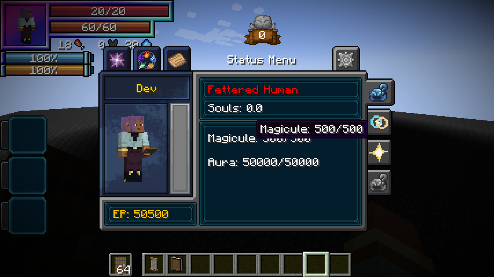

Fettered Human is the starting race of the Heavenly Restriction lineage. A human-looking martial body exchanges magical growth for exceptional physical and aura potential through its intrinsic Unique Skill, Chained.
Contents
Traits
The race preserves the player’s appearance and equipment. Stage bonuses replace the preceding stage’s bonuses. Its ordinary Human EP split remains 2/3 aura and 1/3 magicules, before Chained’s rules: aura capacity is multiplied by 100 and future maximum-magicule gains are blocked. The blocked share is not reassigned. A newly reincarnated Fettered Human has 20,000 base aura and 500 base magicules; Chained makes its aura capacity 2,000,000.
Chained governs true resource/learning restrictions, the martial toggle, mastered resistance degradation, in-slot dodge and Severance Rush. The same skill and mastery persist through the lineage.

The native-client photograph uses staged resource values for visual review.
Intrinsic skill
The intrinsic Unique Chained supplies the lineage’s true restriction and martial abilities. Its active Severance Rush is an instant teleport that deals native Aura slash / Battlewill damage (tensura:aura_slash). The race’s attribute bonuses are passive traits with no direct damage.
Evolution
Select Fettered Human from Tensura’s native reincarnation race menu. It guarantees Chained and still permits the normal reincarnation skill roll. Progression is available in the normal native evolution menu.
Base EP uses the native unmultiplied capacity values; the 100× aura-capacity modifier does not satisfy a base-EP gate by itself. The milestones are constants, independent of the player’s EP when the lineage is selected.
| Stage | Fixed base EP | Mastered Battlewills | Chained mastery |
|---|---|---|---|
| Fettered Human | Starting selection | — | — |
| Tempered Vessel | 100,000 | 1 | 20% |
| Unshackled | 500,000 | 2 | 40% |
| Heavenly Restricted | 2,000,000 | 3 | 60% |
| Heavenbreaker | 8,000,000 | 4 | 100% |